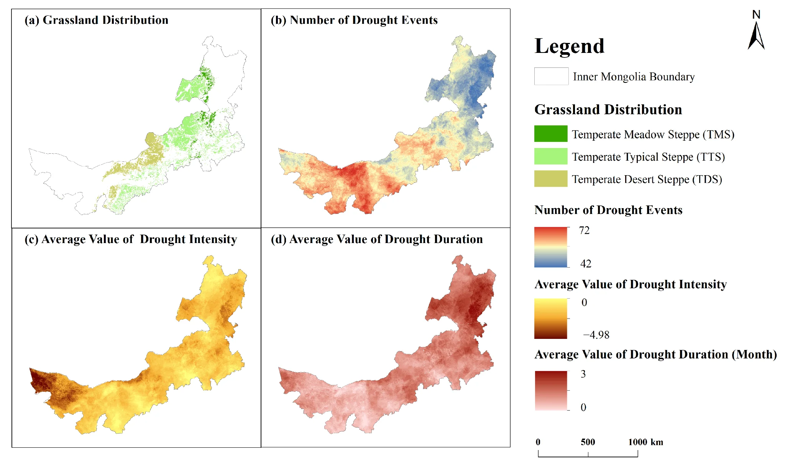
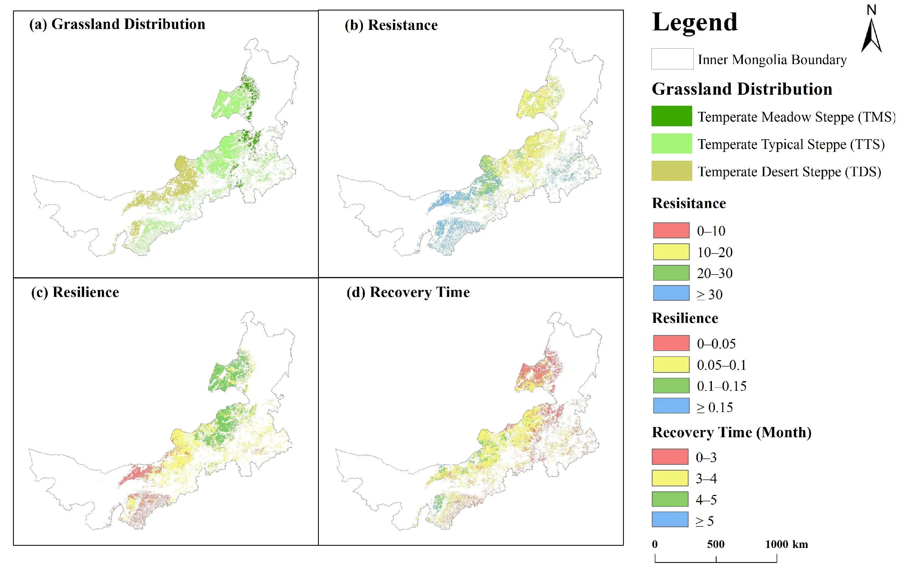

Estudio de Mongolia Interior (1998 - 2020)
Análisis de pastizales en respuesta a patrones de sequía en Mongolia Interior mediante teledetección multiescalar.
El Objetivo de la Investigación
El objetivo principal fue investigar la estabilidad de los pastizales de Mongolia Interior, China, analizando su respuesta ante diferentes patrones de sequía entre los años 1998 y 2020.
Se cuantificó la estabilidad de tres ecosistemas principales:
Estepa de pradera templada (TMS), estepa típica templada (TTS) y estepa desértica templada (TDS).
Se categorizaron seis patrones distintos, combinando por primera vez tanto la intensidad como la duración de los eventos (desde cortas/leves hasta extremas/prolongadas).
Se evaluaron tres indicadores críticos: resistencia, resiliencia y tiempo de recuperación para ver cómo varían según el ecosistema y el rigor del evento.
Metodología y Teledetección
Integración de datos satelitales y meteorológicos de alta resolución para modelar la dinámica de los pastizales.
Se utilizó el Índice de Precipitación-Evapotranspiración Estandarizado (SPEI) mensual. Se calculó a partir de datos de precipitación y evapotranspiración potencial con una resolución espacial de aproximadamente 1 km.
Se empleó el sensor VEGETATION a bordo del satélite SPOT-4 para obtener series temporales del Índice de Vegetación (NDVI). Se aplicó "detrending" para eliminar sesgos estacionales y aislar las anomalías climáticas.
A través del algoritmo de Machine Learning Random Forest, aplicado sobre imágenes Sentinel-2, se delimitó con precisión el área correspondiente a cada tipo de estepa.
La capacidad del ecosistema para mantener su estado de crecimiento original. Calculada como la diferencia entre las anomalías del NDVI antes y durante el evento de sequía.
La capacidad de retornar a la normalidad post-perturbación. Definida por la diferencia entre el NDVI posterior a la sequía y el valor mínimo registrado durante la misma.
El tiempo (en meses) requerido para que la vegetación alcance nuevamente su promedio histórico para ese mes específico.
Tecnología Satelital
El estudio sobre la estabilidad de los pastizales en Mongolia Interior se apoyó principalmente en el sensor VEGETATION a bordo del satélite SPOT-4 (dataset SPOT-VGT), el cual presenta una serie de ventajas operativas y limitaciones técnicas específicas para este tipo de investigación climática de largo plazo.
VEGETATION (SPOT-VGT)
A bordo del satélite SPOT-4.
Aprox. 1 km
Escala mensual
Periodo de 22 años (1998–2020).
Rojo y NIR
Para derivar el Índice NDVI.
Sentinel-2
Clasificación precisa (Random Forest).
Su diseño específico para la observación global diaria permitió construir una serie temporal sólida de 22 años para monitorear condiciones biofísicas.
La resolución de 1 km permitió una integración coherente con datos meteorológicos (precipitación y evapotranspiración) y el índice SPEI en un análisis pixel a pixel.
La sensibilidad de las bandas Rojo y NIR permitió capturar la actividad fotosintética y obtener anomalías relativas mediante un "detrending" (eliminando el ruido estacional).
El estudio aprovechó la alta resolución de Sentinel-2 para la cartografía inicial, combinándola con la robustez temporal de SPOT-VGT para maximizar la precisión analítica.
El uso de datos mensuales es una limitación crítica porque puede sobreestimar el tiempo de recuperación. Capturar la dinámica exacta requeriría datos con resolución diaria.
Aunque 1 km es útil regionalmente, puede ser insuficiente para observar diferencias espaciales detalladas o efectos del microclima en comparación con sensores más resolutivos.
El sensor captura la respuesta biológica (NDVI), pero no mide políticas de pastoreo humano, el pH del suelo o el carbono orgánico, los cuales influyen en la estabilidad.
Debido a la escala, se asumió que la distribución de pastizales no cambió en 20 años, ignorando posibles transiciones de cobertura no detectables a baja resolución en etapas iniciales.
Resultados del Análisis

Figura 4. Comparación de los indicadores de estabilidad (resistencia, resiliencia y tiempo de recuperación) en los diferentes tipos de pastizales (TMS, TTS y TDS).
Fuente: Yu, H., et al. (2025). Remote Sensing, 17, 559.
Posee la mayor resistencia pero la menor resiliencia y el mayor tiempo de recuperación frente a los eventos de sequía.
Es la más resiliente y la que se recupera más rápido (2.6 meses de media), aunque es la ecosistema menos resistente al impacto inicial.
La gran mayoría de los pastizales analizados logran volver a su estado normal de crecimiento en un periodo máximo de cinco meses.
El estudio confirmó un contundente intercambio negativo entre resistencia y resiliencia.
Los ecosistemas que están intrínsecamente adaptados para aguantar la sequía (como la TDS) son inherentemente más lentos para recuperarse una vez que esta termina. No se puede maximizar ambas variables simultáneamente.

Figura 7. Representación del intercambio negativo (Trade-off) entre la resistencia y la resiliencia en los ecosistemas de pastizales analizados.
Fuente: Yu, H., et al. (2025). Remote Sensing, 17, 559.
La discusión resalta que la estabilidad ecosistémica no es una propiedad estática, sino una respuesta dinámica vinculada al patrón específico de sequía.
El hecho de que la TDS sea altamente resistente se atribuye a sus especies dominantes adaptadas, que poseen alta eficiencia en el uso del agua. Sin embargo, su recuperación es lenta debido a limitaciones de nutrientes y agua en climas áridos. El estudio advierte que, si futuros eventos extremos superan el umbral de resistencia de la TDS, este ecosistema corre un riesgo severo de colapso por su baja resiliencia.
Finalmente, los autores señalan que, aunque la teledetección es una herramienta poderosa, existen factores no climáticos que influyen en la recuperación y que deben integrarse en futuros modelos diarios para obtener una precisión aún mayor:
Los pastizales de la estepa desértica (TDS), en el oeste de Mongolia Interior, experimentaron sequías más severas, frecuentes e intensas en comparación con la estepa de pradera (TMS) y la estepa típica (TTS) situadas en el este y centro. Además, la TDS registró la mayor frecuencia de eventos de sequía extrema prolongada.
La TMS es la que se recupera más rápido (mediana de 2.6 meses), mientras que la TDS es la que requiere más tiempo (mediana de 3.7 meses).
Se confirmó un trade-off (compensación) entre estos dos indicadores: los ecosistemas con baja resistencia tienden a poseer una alta resiliencia (como la TMS), mientras que aquellos con alta resistencia suelen tener una baja resiliencia (como la TDS).
A pesar de su vulnerabilidad, los ecosistemas de pastizales demostraron ser capaces de recuperarse rápidamente, generalmente dentro de los cinco meses posteriores al inicio de la sequía.
Debido a su baja resiliencia, la estepa desértica (TDS) se considera la más vulnerable ante futuros eventos de sequía extrema que podrían superar su umbral de recuperación, por lo que requiere mayores esfuerzos de conservación.
Los autores sugieren que investigaciones futuras utilicen datos de mayor resolución temporal (diarios) para detectar diferencias más finas en los tiempos de recuperación y profundizar en cómo las condiciones meteorológicas posteriores a la sequía influyen en dicho proceso.
A continuación se encuentra el enlace al recurso audiovisual con la sustentación oral de esta investigación, cumpliendo con los requisitos de la guía de aprendizaje.
[ ENLACE DEL VIDEO (CLIC) ]